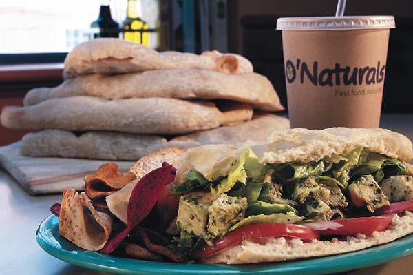
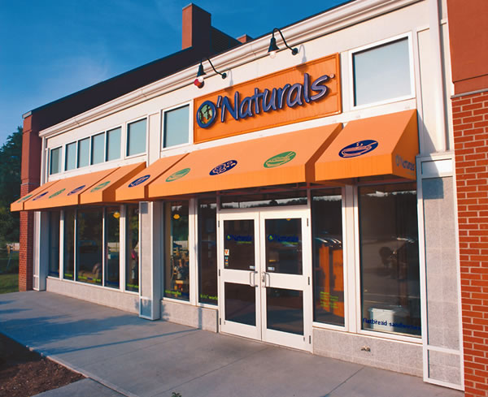

Slowly, a new kind of fast-food restaurant business is gaining popularity in the United States. In April, a small chain in the Northeast called O’Naturals opened its fourth store - in Somerville, Mass., a Boston suburb.
The franchise, which opened its first restaurant in 2001, is the brainchild of Gary Hirschberg, the president and CEO of Stonyfield Farm organic yogurt company. Naturally, granola and yogurt is a staple of the restaurant’s menu. O’Naturals also offers free-range chicken flatbread sandwiches, bison meatloaf, organic smoked tofu, all-natural chicken nuggets and organic cheesecakes.
“Simultaneously people are living these crazy lifestyles and looking for alternatives,” O’Naturals president Mac McCabe says. “O’Naturals is a marriage between the search for something organic with the lifestyle people lead.”
The restaurant, McCabe says, is marketed toward families who are already paying a premium for better quality food. The price range of the restaurant reflects that - most items cost between $4.75 and $7.
But the key to making O’Naturals competitive with other fast-food franchises, McCabe says, is having a delicious product.
“Whether it’s natural or organic - it doesn’t matter, as long as it tastes good,” he says. “So we’re giving great food, and by the way, you get this bonus that there’s no garbage in it.”
O’Naturals is not alone in the effort to “slow down” the U.S. fast-food industry. In Colorado, Good Times burger chain offers all-natural beef; Florida’s EVOS chain offers tacos with free-range and hormone-free meats. Chipotle - a subsidiary of McDonald’s - serves meals with local ingredients and natural pork products.
Visit the O’Naturals Web site for a list of the restaurant’s locations.
|
 O’NATURALS O’Naturals offers flatbread sandwiches such as this pesto chicken. |
 O’NATURALS O’Naturals, a natural and organic fast-food chain, has opened its fourth store in New England. |
|